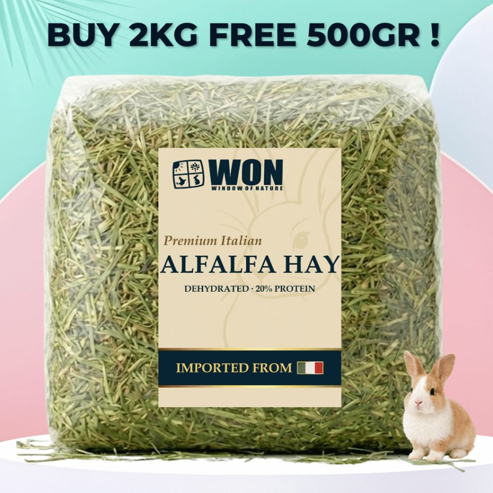
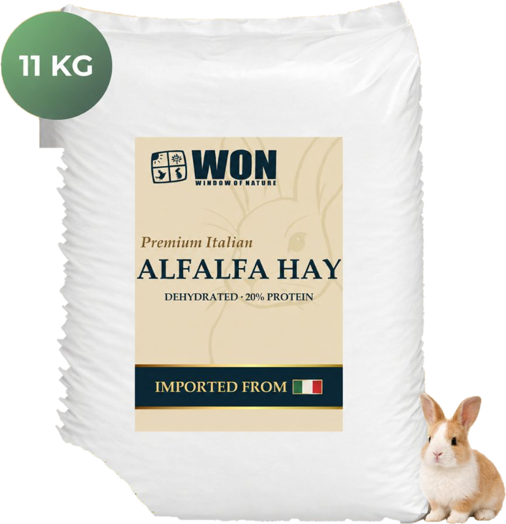

Italian alfalfa / 500 g
The small pack
A compact pack for a considered small-animal feeding plan.
500 g
View product Italian-grown alfalfa for considered feeding programmes. From small-animal care to professional equestrian yards, discover a nutrient-rich forage with a purpose.

Alfalfa is a legume forage valued for its protein, calcium and digestible energy. It can complement grass hay in a balanced equine ration, with the proportion chosen for the horse’s workload, life stage and overall diet.
Forage analysis and your equine nutritionist’s ration plan should guide selection. Product listing values are not a substitute for a current batch analysis.
Choose 500 g, 1 kg or 11 kg, or speak with us about your business requirements.
A compact pack for a considered small-animal feeding plan.


For larger requirements. Contact us to discuss pack quantities, delivery and availability.
Alfalfa typically contains more protein and calcium than grass hay. Its role depends on the animal and the complete ration.
Relevant to equine feeding programmes and selected small-animal life stages. Different animals need different proportions.
Origin, nutrient profile, condition and storage all help inform a forage purchase. Discuss your requirements before ordering.
For equestrian centres, stud farms, training yards and distributors. Tell us your destination and anticipated requirements.